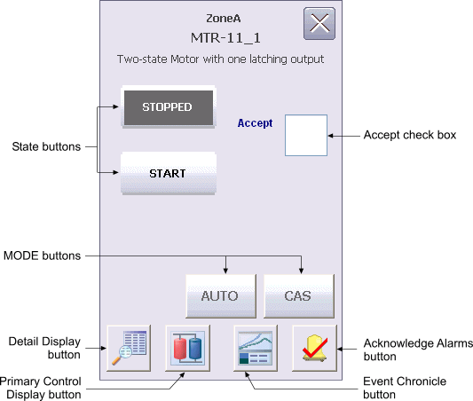

Motor and Valve module Operator Keyboard faceplate (DL_FP_KB)

The Motor and Valve Module Operator Keyboard faceplate contains the following items:
State buttons– Depending on the type of discrete device being controlled, there are either two or three state buttons, each labeled with a text description of its corresponding state. Click one of these buttons to set the target state (SP_D of the Device Control block) to the state described on the button when the state is permitted.
MODE buttons – These buttons are used to set the target mode of the device to CAS or AUTO. When CAS is a permitted mode, both buttons appear. When CAS is not permitted, neither button appears.
Accept check box – This check box is used to toggle the ACCEPT_D parameter in the Device Control block. When Accept is checked, the actual state (PV_D) is set to that of the output state (OUT_D), regardless of the discrete input states that determine FV_D.
Detail Display button – Open the detail display for the device.
Primary Control Display button – Open the primary control display.
Event Chronicle button – Open the Process History Viewer.
Acknowledge Alarms button – Acknowledge all alarms in the device.
Module Error indicator – A flashing blue bar is displayed below the Detail Display button when a module error occurs. This prompts you to go to the detail display to view and clear the error.